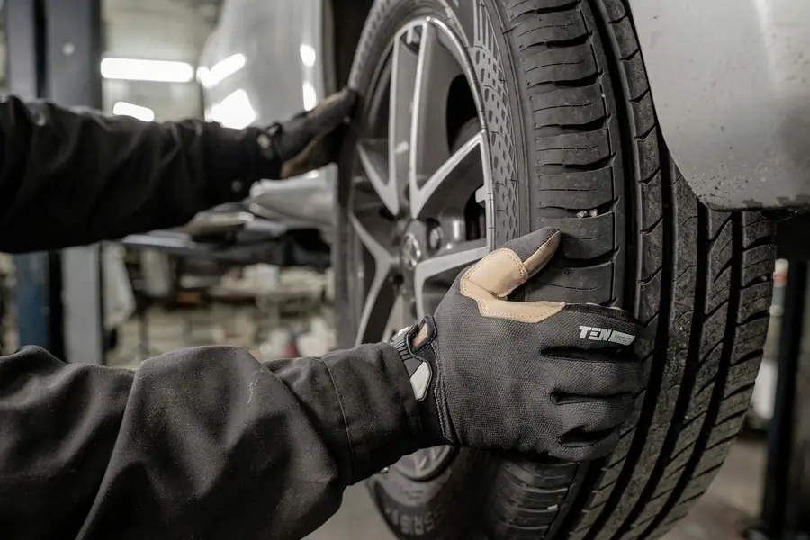
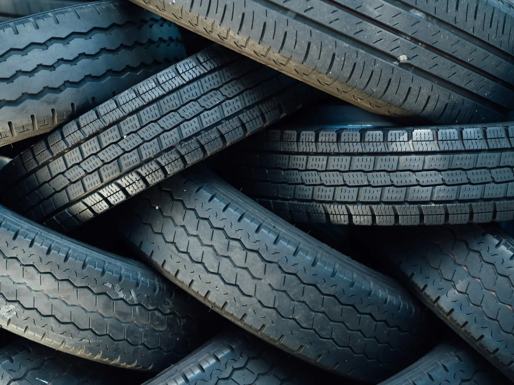
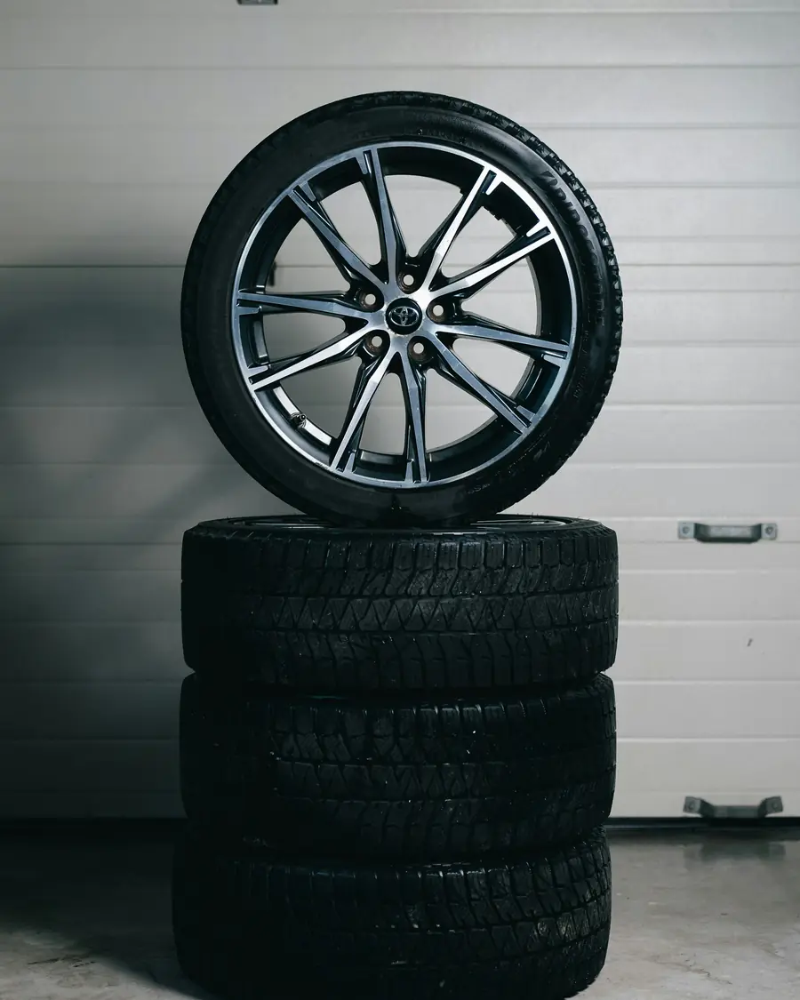
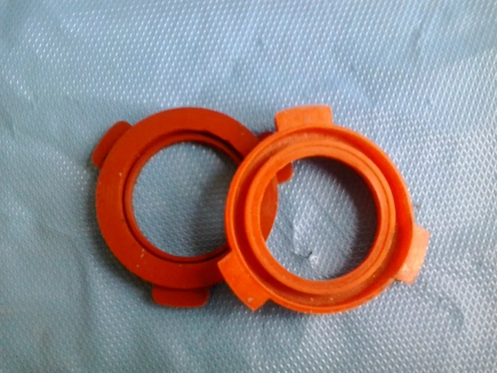
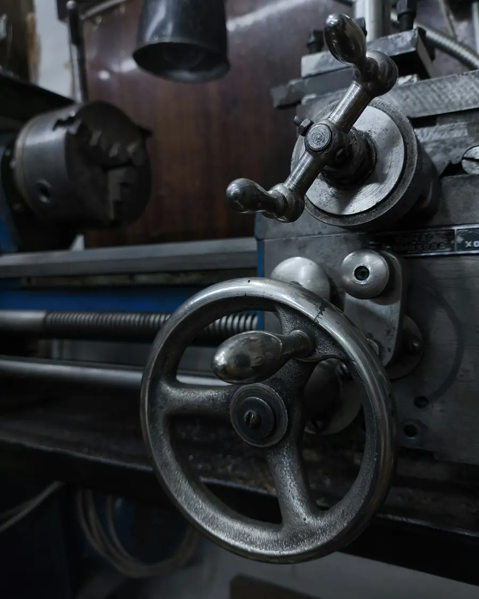
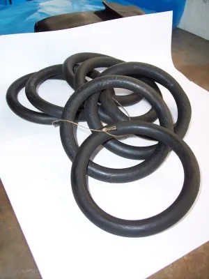
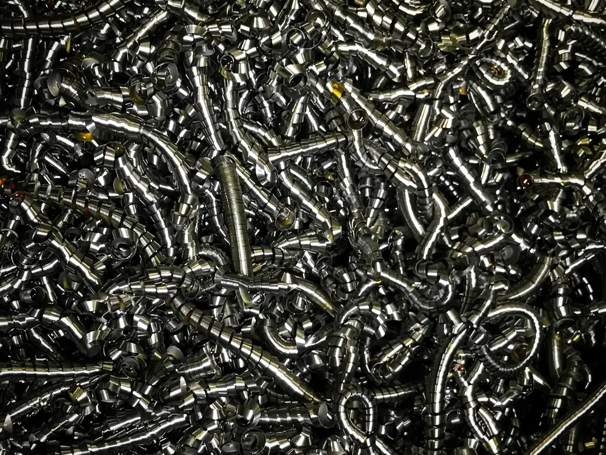
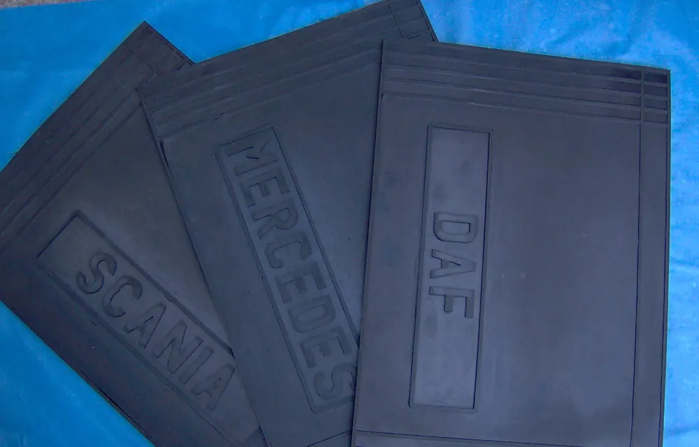

Gumiszerviz
- gumiszerelés és centírozás korszerű gépekkel
- gumiköpeny-javítás minden méretben

Gumiszerelés, centírozás és javítás a babakocsi keréktől a mezőgazdasági gép kerékig. Egyedi műszaki gumiáru, saját szerszámmal, minta vagy rajz alapján.
A gumiipar és a forgácsolás több vetületében generációs tapasztalattal dolgozunk: a személyautó gumijától az egyedi gépalkatrészig.




Mindennemű és minden méretű gumiköpenyt javítunk. A szerelés és a centírozás a legkorszerűbb gépekkel történik.
Néhány darab abból, amit a műhelyünkben már legyártottunk. Válassza ki, mire hasonlít az Önnek kellő alkatrész, jelölje meg az anyagot, és visszahívjuk az ajánlattal.
Válasszon egyet:

Tömítések, gyűrűk
Milyen anyagból kell? (több is lehet)
Mit hozzon? Egy mintadarabot vagy egy rajzot. Ez alapján a gumisütő szerszámot is mi készítjük el.
A forgácsoló részleg a saját szerszámaink miatt jött létre, ma megrendelésre is dolgozik.

A „Takács gumis” műhely a jó hírnevét a járműabroncsokkal alapozta meg. A többi lépés mind az ügyfelek igényeiből jött.

„Gyors, precíz, korrekt munka. Mindenkinek ajánlom.”
Google-vélemény„Időpont nélkül érkeztem, azonnal nekiálltak az autónak! … manapság nagyon ritka az ilyen munkabeli hozzáállás!”
Google-vélemény„A lehető legnagyobb professzionalizmus és vevőközpontúság jellemzi a céget. Köszönöm a gyors, szakszerű diagnózist és az azonnali megoldást.”
Google-véleményÍrja meg, miben segíthetünk, és munkaidőben visszahívjuk. Gumialkatrésznél a részleteket telefonon beszéljük meg.
Ha nem találja a választ, hívjon a (06 69) 322 201-es számon.
Mindennemű és minden méretű gumiköpenyt javítunk, a babakocsi keréktől a mezőgazdasági gép kerékig. A szerelés és a centírozás korszerű gépekkel történik.
Puhától a keményig, olaj-, benzin-, sav- és hőálló gumiból, valamint szilikonból, élelmiszer-minőségben és különböző színekben.
Egy mintadarab vagy egy rajz. Ez alapján a gumisütő szerszámot is magunk készítjük el.
Igen, a forgácsoló részlegünk féktárcsák és fékdobok szabályozását is vállalja, emellett marást, síkköszörülést (húsdaráló tárcsák és kések, hengerfejek) és kisebb alkatrészek automata esztergás sorozatgyártását (legfeljebb 30 mm átmérőig).
Hétfőtől péntekig 8:00 és 16:00 között, szombaton és vasárnap zárva.
7700 Mohács, Park u. 1. (hrsz. 3448).
| Hétfő–péntek | 8:00–16:00 |
| Szombat–vasárnap | zárva |